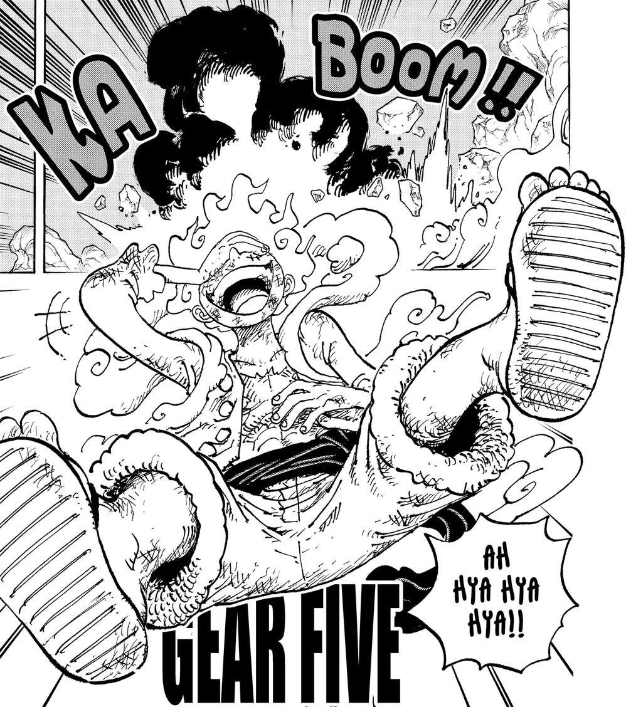
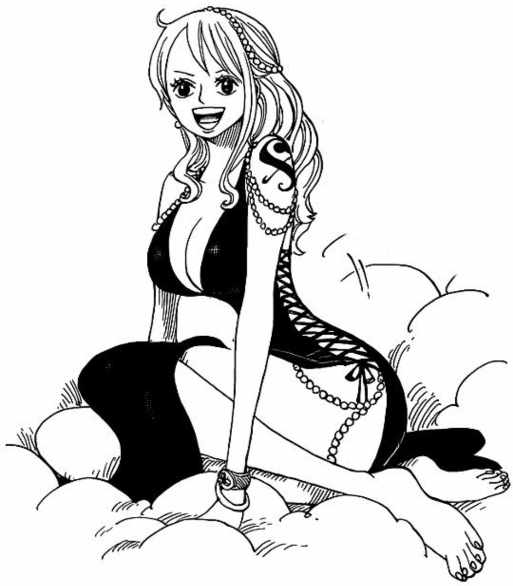
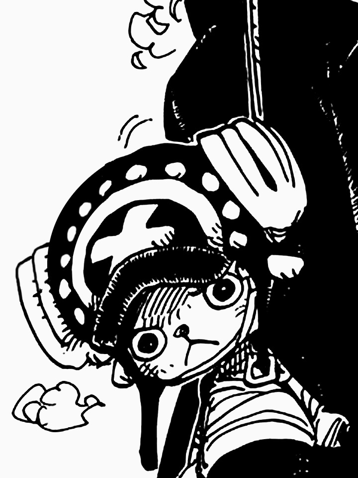
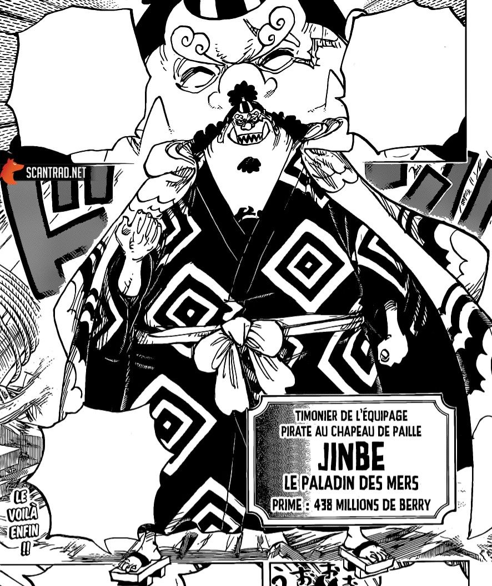

Monkey D. Luffy
Personality: Carefree, adventurous, loyal, determined.
Abilities: Gomu Gomu no Mi (Rubber-like stretching)
Dream: Find One Piece, become the Pirate King.
Crew: Captain of the Straw Hat Pirates.
Bounty:3 Billion Barreys
Trademark: Wears a straw hat, a symbol of his determination.

Personality: Serious, determined, strong-willed, loyal.
Abilities: Santoryu (Three Sword Style), incredible swordsman.
Dream: Become the world's greatest swordsman.
Crew: Swordsman of the Straw Hat Pirates.
Bounty: 320 Million Barreys
Trademark: Wears a green bandana and carries three swords.

Personality: Chivalrous, passionate, suave, cook extraordinaire.
Abilities: Black Leg Style martial arts, master chef.
Dream: Find the All Blue, a legendary sea where all oceans meet and diverse fish gather.
Crew: Cook of the Straw Hat Pirates.
Bounty: 330 Million Barreys
Trademark: Wears a black suit, smokes a cigarette, and has a curly eyebrow.

Nami
Personality: Smart, ambitious, compassionate, navigational expert.
Abilities: Navigation skills, cartography, weather manipulation (with the Clima-Tact).
Dream: Create accurate maps of the world.
Crew: Navigator of the Straw Hat Pirates.
Bounty: 66 Million Barreys
Trademark: Often seen wearing an orange mini-skirt and a white and blue striped shirt.

Personality: Intelligent, calm, enigmatic, knowledgeable.
Abilities: Hana Hana no Mi (Flower-Flower Fruit), expert archaeologist.
Dream: Discover the true history of the world, find the Rio Poneglyph.
Crew: Archaeologist of the Straw Hat Pirates.
Bounty: 130 Million Barreys
Trademark: Often wears purple clothing and glasses, has a large blue hat.

Personality: Brave, inventive, storyteller, prone to exaggeration.
Abilities: Expert marksman, skilled inventor, capable of using Pop Green plants.
Dream: Become a brave warrior of the sea, travel the world.
Crew: Sniper of the Straw Hat Pirates.
Bounty: 200 Million Barreys (as Sogeking)
Trademark: Often wears a green hat with a long nose, and carries a slingshot.

Tony Tony Chopper
Personality: Innocent, kind-hearted, easily scared, compassionate.
Abilities: Zoan-type Devil Fruit user (Hito Hito no Mi), skilled doctor.
Dream: Become a great doctor, travel the world.
Crew: Doctor and mascot of the Straw Hat Pirates.
Bounty: 100 Beli (post-timeskip)

Personality: Cheerful, musical, humorous, gentlemanly.
Abilities: Revived as a skeletal musician, skilled swordsman, Devil Fruit user (Yomi Yomi no Mi).
Dream: Reunite with his former crew and fulfill their promise to return to Laboon.
Crew: Musician and swordsman of the Straw Hat Pirates.
Bounty: 83 Million Barreys

Personality: Outgoing, eccentric, passionate, mechanical genius.
Abilities: Cyborg enhancements, master shipwright, proficient in hand-to-hand combat.
Dream: Build and sail the greatest ship in the world, the Thousand Sunny.
Crew: Shipwright of the Straw Hat Pirates.
Bounty: 94 Million Barreys

Jinbei
Personality: Wise, honorable, calm, compassionate.
Abilities: Fish-Man Karate, Fish-Man Jujutsu, expert helmsman, proficient in Haki.
Dream: Achieve harmony between humans and fish-men, fulfill his late friend Fisher Tiger's dream.
Crew: Helmsman of the Straw Hat Pirates.
Bounty: Formerly 438 Million Barreys